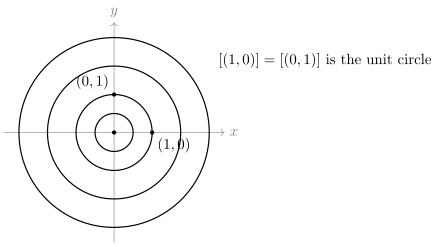
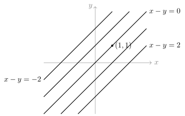

0.5 Relations, Equivalence Classes and Quotients
Mathematics constantly declares different-looking
things to be “the same”:
0.5.1. Relations
Before we can say what a good notion of sameness is,
we need a word for any way of comparing two elements of
a set, good or bad. Examples are
A relation on a set
- (a) On
- (b) On
- (c) On
- (d) On any set
Every subset of
0.5.2. Equivalence relations
What must any reasonable notion of “
An equivalence relation is a way of declaring elements “the same” that behaves like equality: everything is the same as itself, sameness goes both ways, and it can be chained.
A relation
- (E1)
Reflexive:
- (E2)
Symmetric: for all
- (E3)
Transitive: for all
In words: (E1) asks every single element to be
related to itself, with no exceptions. (E2) says the
relation cannot be one-way. (E3) says a chain of two
links can be shortened to one link, and so, by applying
it repeatedly, can any finite chain. When
The standard move for checking an equivalence
relation is to write three short paragraphs, one per
condition, each starting from its hypothesis (“Let
Show that each of the following is an equivalence relation.
- (a) Equality on any
set
- (b)
Congruence modulo
- (c) “Same length” on
the set
- (d) “Same value”:
for a function
- (e) Fractions: on
Solution.
(a) Every
(b) Reflexive. Let
(c) This is the special case of (d) in which
(d) Reflexive:
(e) Reflexive:
Minimal changes to these examples show that each condition can fail on its own.
Decide which of (E1)–(E3) each relation satisfies.
- (a)
- (b) On
- (c) On
Solution.
(a) Change “
(b) Change “
(c) Symmetry holds, since
Warning. A tempting argument claims
that (E1) follows from (E2) and (E3): “if
Quick check. On
Solution. No. It is reflexive
(
Why these three conditions. They are
precisely what the next subsection needs. Reflexivity
will guarantee that every element lies in its own class,
so no class is empty and nothing is lost. Symmetry and
transitivity together will guarantee that two classes
are either identical or disjoint. Drop any one of them
and the picture of
Remark. Two equivalence relations on matrices are central later: row equivalence, which records that one matrix can be reached from another by row operations, and similarity, which records that two square matrices describe the same linear map in different coordinates. Both are introduced once matrices are available, later in this chapter, and studied in Chapters 2 and 3.
0.5.3. Equivalence classes and partitions
Once we have decided which elements count as the same, it is natural to collect everything that is the same as a given element into one set.
Let
The word “representative” is chosen carefully. A
class is one set, but it usually has many names:
- (a) For equality on
- (b) For congruence
modulo
- (c) For “same
length” on strings of
- (d) For the full
relation
- (e) For “same
distance from the origin” on
In example (e), the classes look like this. Each circle is one class; the origin on its own is another.

The picture suggests two facts: every point lies on exactly one circle, and two different circles never meet. Both hold for every equivalence relation, and the proof is where the three conditions do their work.
Let
- (a)
- (b) Either
Proof.
- (a) (⇒) Suppose
(⇐) Suppose
- (b) Suppose
Part (a) is the working form of the lemma: to show two classes are equal, show one representative is equivalent to the other. The picture of non-overlapping pieces that cover everything has its own name.
A partition of a set
- (P1) every block is non-empty;
- (P2)
distinct blocks are disjoint: if
- (P3) the blocks
cover
By (P2) and (P3), every element of
Quick check. Is
Solution. Neither. The first
contains the empty block, so (P1) fails, even though
(P2) and (P3) hold. The second does not cover
The main theorem says that equivalence relations and
partitions are two descriptions of the same thing:
“which elements are the same” and “how
Let
- (a) If
- (b) If
- (c) The two
constructions undo each other: starting from
Idea. Part (a) is the lemma plus
reflexivity: (P1) and (P3) come from
Proof.
(a) Let
(b) Reflexive. Let
Now let
- (c) Let
So whenever you meet an equivalence relation, you may think of it as a way of cutting the set into non-overlapping pieces, and vice versa. Exercise C2 uses this to count equivalence relations by counting partitions instead.
0.5.4. Quotient sets
Now we take the decisive step: treat each piece as a
single new element. The time of day is the classic case.
Hours counted from some starting moment are integers,
but a clock only records the class of the hour modulo
Let
The elements of
(a) For an integer
(b) Describe the quotient of the set
Solution.
(a) Let
(b) Two strings are identified exactly when they have the same length, so there is one class for each length
0.5.5. Functions on a quotient
We want to compute with classes. On a clock, “three
hours after 11 o’clock” is 2 o’clock, which is really
addition on
Here is that failure in its simplest form.
Let
Solution. No. Since
By contrast, “
The contrast in that example is the whole story, and
the following theorem turns it into a test. A function
Let
- (a) If
- (b) Conversely, if
some function
Idea. The formula
Proof.
- (a) Let
For uniqueness, suppose
- (b) Suppose
In practice we rarely name
The most important application in this chapter is
arithmetic modulo
Fix an integer
Solution. We must show that the
value
In
This is the same principle as Theorem 0.5.3, applied
to a function of two variables. The same check (Exercise (B3: Multiplication modulo
Warning. A rule written in terms of
a representative is not automatically a function on
classes. Define it, then check it. For example, “
Quick check. Which of these rules
defines a function? (i)
Solution.
(i) Yes. If
(ii) No.
0.5.6. Exercises
A. Check your understanding
- (a) State the three
conditions for a relation
- (b) True or false: a symmetric and transitive relation is automatically reflexive. Give a reason.
- (c) True or false:
if two equivalence classes
- (d) You want to
define a function on
- (e) How many
elements does
Solution.
(a) Reflexive:
(b) False. On
(c) True. By Lemma 0.5.1 (b) the classes are equal, and by part (a) of the same lemma
(d) That equivalent representatives give the same value: if
(e) Five, by Example (Quotient sets) (a). Yes:
B. Practice
Determine which of the following are equivalence relations. For those that are, describe the equivalence classes. For those that are not, name a condition that fails with a specific witness.
- (a) On
- (b) On
- (c) On
- (d) On
- (e) On the set of
all subsets of
Solution.
(a) Equivalence relation. Reflexive:
(b) Not an equivalence relation. Reflexivity fails:
(c) Equivalence relation. Reflexive:
(d) Not an equivalence relation. Reflexivity fails at
(e) Equivalence relation, since it is “same value” (Example (Equivalence relations) (d)) for the function
On
- (a) Prove that
- (b) Describe the
class of
- (c) Show that
Solution.
(a) This is “same value” for
(b) Put

- (c) Let
Injective. Suppose
Surjective. Let
Hence
Fix an integer
- (a) Prove that
- (b) Write out the
multiplication table of
- (c) Hence find a
class
Solution.
(a) Suppose
(b) Reducing each product modulo
For instance
- (c) From the table,
C. Going deeper
- (a) Let
- (b) On
- (c) On
Hint for (c): compute
Solution.
(a) Suppose
(b) In
(c) By Theorem 0.5.3 (a), it suffices to show that
- (a) List all
partitions of
- (b) Hence deduce
that there are exactly
- (c) Write the
equivalence relation corresponding to the partition
Solution.
(a) Sort by the number of blocks. One block:
(b) By Theorem 0.5.2 (a), every equivalence relation gives a partition, its set of classes. By Theorem 0.5.2 (c), the relation can be recovered from that partition, so distinct equivalence relations give distinct partitions. By Theorem 0.5.2 (b), every partition arises this way. Hence equivalence relations on
(c) Two elements are related exactly when they lie in a common block:
Let
- (a) Prove that
- (b) Show by an
example that
- (c) For congruence
modulo
Hint for (b): try congruence modulo
Solution.
(a) Reflexive. Let
(b) Let
(c)